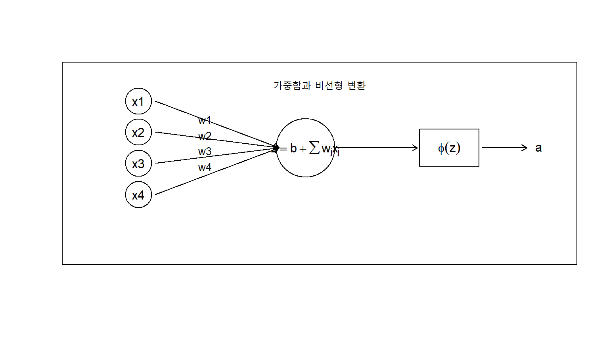
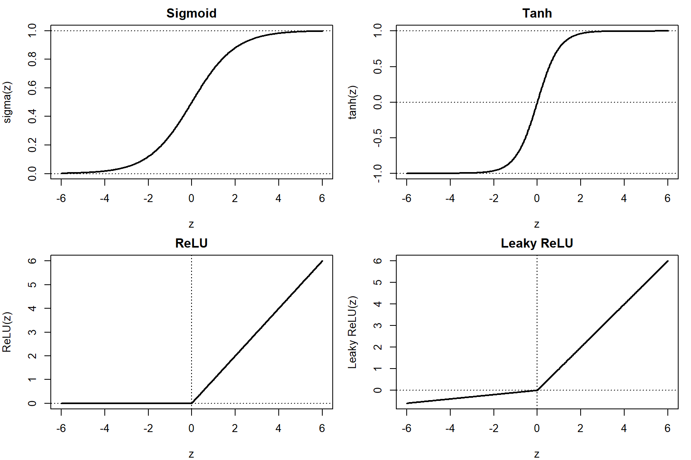
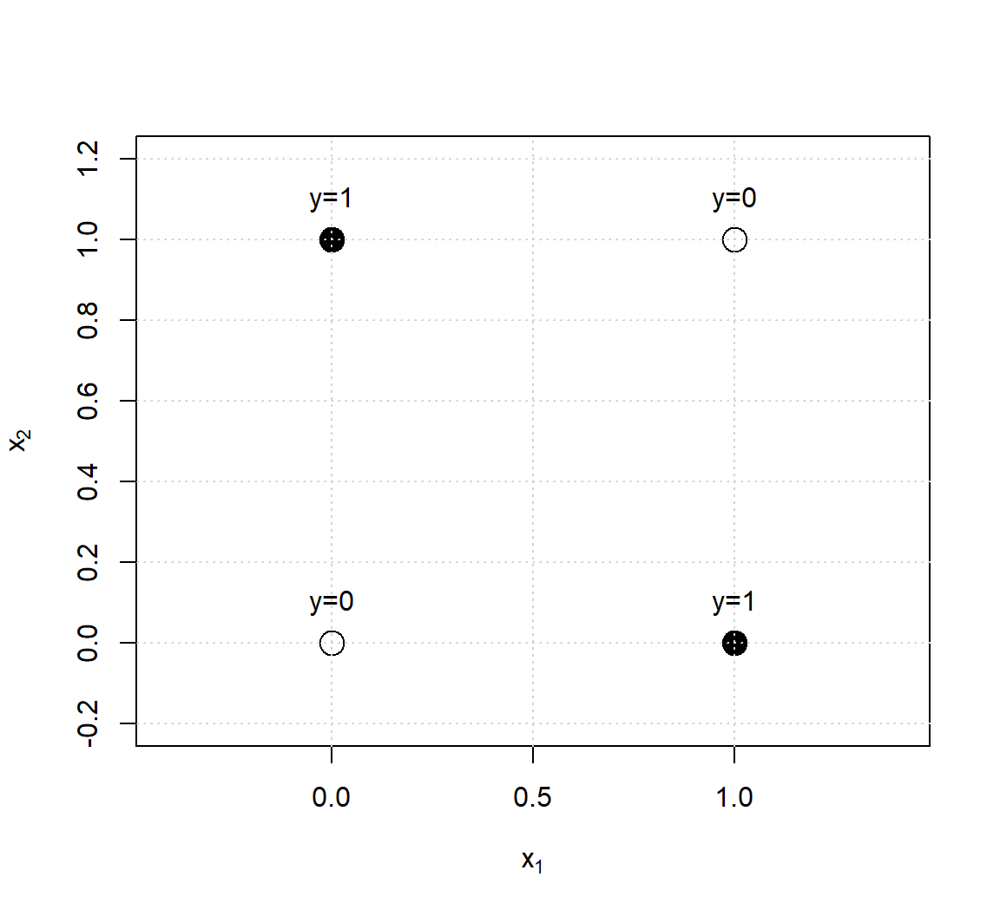
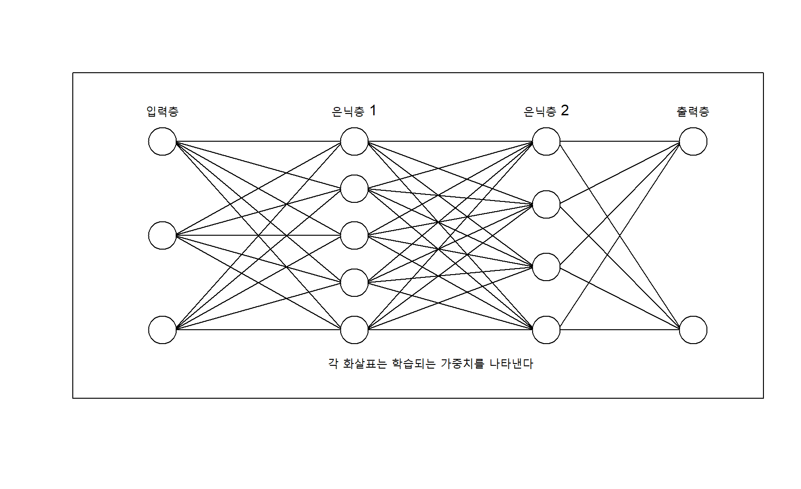
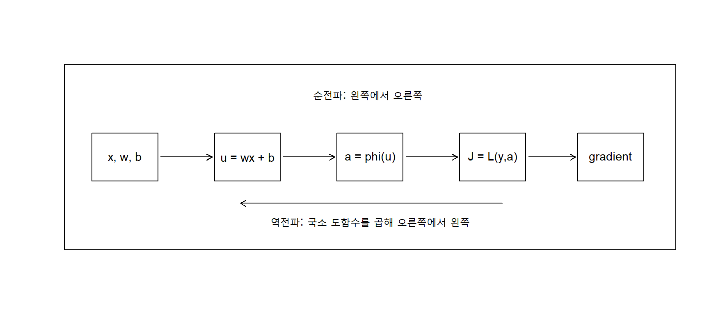
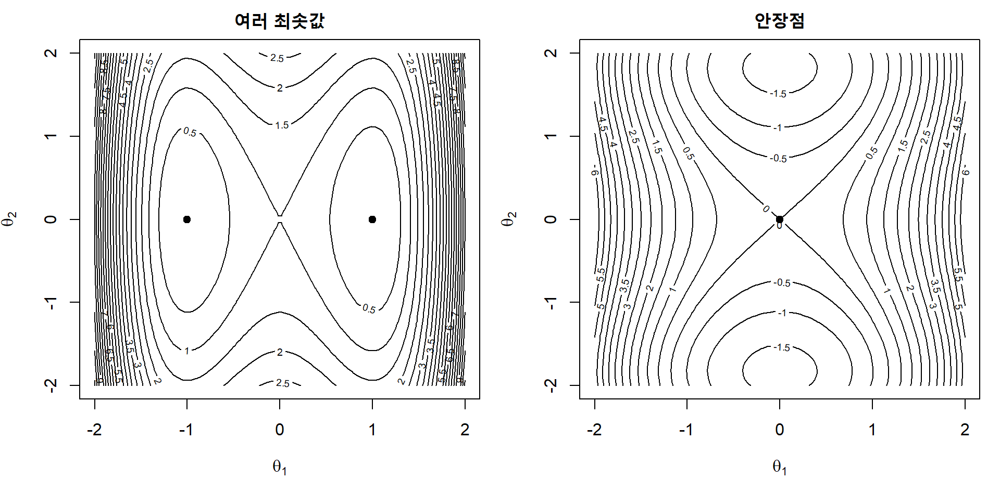
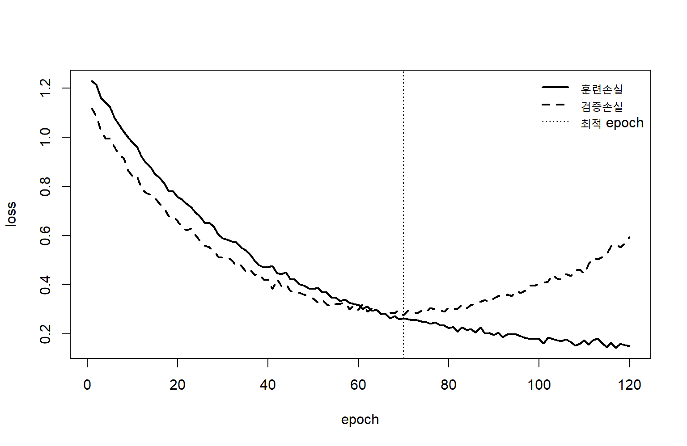
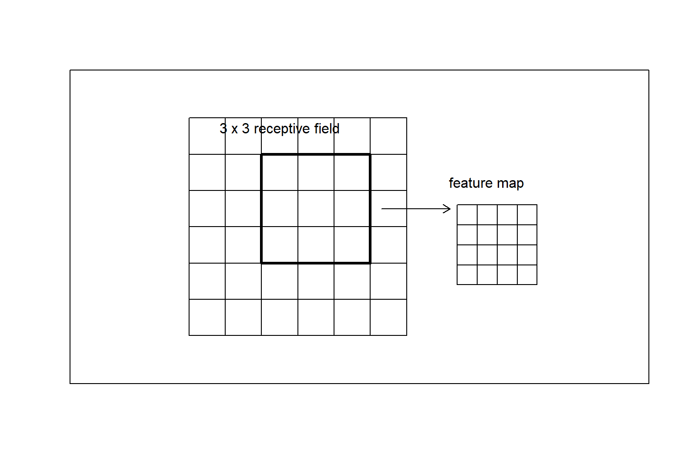
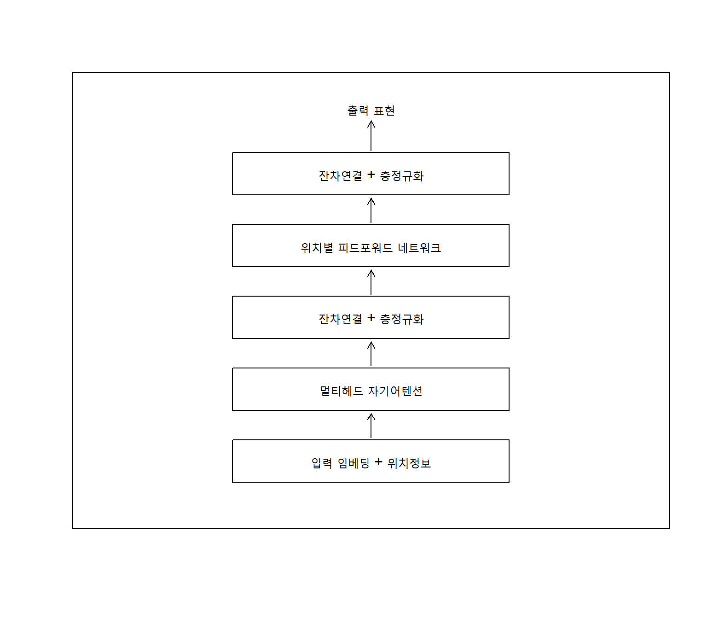

5 신경망
신경망은 입력변수의 선형결합과 비선형 변환을 여러 층에 걸쳐 합성하여 복잡한 함수관계를 학습하는 모형이다. 선형 회귀와 로지스틱 회귀가 하나의 선형 예측자를 사용한다면, 신경망은 다수의 중간표현을 반복적으로 생성하고 결합한다. 이 과정에서 원자료로부터 예측에 유용한 특성을 자동으로 구성할 수 있기 때문에 신경망은 단순한 비선형 회귀모형을 넘어 표현학습(representation learning)의 핵심 도구가 된다.
훈련자료를
\[ \mathcal D = \{(\mathbf x_i,y_i)\}_{i=1}^{n}, \qquad \mathbf x_i\in\mathbb R^p \tag{5.1}\]
라고 하자. 신경망은 모수 \(\boldsymbol\theta\)를 갖는 함수
\[ \widehat y = f_{\boldsymbol\theta}(\mathbf x) \tag{5.2}\]
를 정의하고, 손실함수 \(L\)을 최소화하도록 모수를 학습한다.
\[ \widehat{\boldsymbol\theta} = \arg\min_{\boldsymbol\theta} \left[ \frac{1}{n} \sum_{i=1}^{n} L\{y_i,f_{\boldsymbol\theta}(\mathbf x_i)\} + \lambda\Omega(\boldsymbol\theta) \right] \tag{5.3}\]
여기서 \(\Omega(\boldsymbol\theta)\)는 가중치 감쇠, 희소성, 매끄러움 또는 다른 구조적 제약을 나타내는 규제항이다. 신경망의 성능은 네트워크 구조만으로 결정되지 않는다. 활성화 함수(activation function), 손실함수, 가중치 초기화, 최적화 알고리즘, 학습률, 배치크기, 규제 방법과 자료 표현이 서로 상호작용한다.
중요신경망을 이해하는 네 가지 관점
신경망은 네 가지 관점에서 함께 이해해야 한다. 첫째, 여러 함수의 합성으로 이루어진 함수근사기이다. 둘째, 손실을 최소화하는 고차원 최적화문제이다. 셋째, 중간층에서 자료의 표현을 학습하는 표현학습 모형이다. 넷째, 층구조와 가중치 공유를 통해 특정 귀납적 편향을 구현하는 계산그래프(computational graph)이다.
5.1 뉴런 모델
5.1.1 인공 뉴런의 기본 구조
인공 뉴런(artificial neuron)은 여러 입력을 가중합한 뒤 비선형 활성화 함수를 적용하는 계산단위이다. 입력벡터 \(\mathbf x=(x_1,\ldots,x_p)^\top\)와 가중치벡터 \(\mathbf w=(w_1,\ldots,w_p)^\top\)에 대해 뉴런의 선형입력(preactivation)은
\[ z = b+\mathbf w^\top\mathbf x = b+\sum_{j=1}^{p}w_jx_j \tag{5.4}\]
이다. 뉴런의 출력은
\[ a = \phi(z) \tag{5.5}\]
로 정의한다. 여기서 \(b\)는 편향항(bias)이고, \(\phi\)는 활성화 함수이다. 편향항은 결정경계 또는 활성화 임계값이 원점을 지나도록 제한되는 것을 막는다.
선형입력 \(z\)는 입력공간에서 하나의 방향을 선택하는 투영으로 해석할 수 있다. \(\mathbf w\)는 어떤 입력조합에 반응할지를 결정하고, \(b\)는 반응이 시작되는 위치를 이동시키며, \(\phi\)는 선형 투영을 비선형 출력으로 변환한다.
5.1.2 생물학적 비유와 수학적 추상화
인공 뉴런은 생물학적 뉴런에서 영감을 받았지만, 실제 신경세포의 복잡한 전기·화학적 작동을 충실히 재현하는 모형은 아니다. 생물학적 뉴런의 수상돌기, 세포체, 축삭과 시냅스를 각각 입력, 가중합, 출력과 가중치에 대응시키는 설명은 직관을 제공하지만 수학적 모형의 정당화는 함수근사와 최적화의 관점에서 이루어져야 한다.
인공 뉴런의 핵심은 다음 세 요소이다.
- 입력의 선형결합
- 비선형 활성화
- 자료에 따라 조정되는 가중치
비선형 활성화가 없다면 여러 층을 쌓아도 전체 모형은 하나의 선형변환으로 축약된다. 예를 들어 두 층이
\[ \mathbf h = \mathbf W^{(1)}\mathbf x+\mathbf b^{(1)}, \qquad \widehat{\mathbf y} = \mathbf W^{(2)}\mathbf h+\mathbf b^{(2)} \tag{5.6}\]
로 구성되면
\[ \widehat{\mathbf y} = \mathbf W^{(2)}\mathbf W^{(1)}\mathbf x + \mathbf W^{(2)}\mathbf b^{(1)} + \mathbf b^{(2)} \tag{5.7}\]
가 되어 하나의 선형변환과 동일하다. 따라서 신경망의 표현력은 층의 수뿐 아니라 층 사이에 삽입되는 비선형성에서 나온다.
5.1.3 계단 활성화 함수
초기 뉴런 모형에서는 임계값을 기준으로 출력이 바뀌는 계단함수(step function)를 사용하였다.
\[ \phi(z) = I(z\geq 0) = \begin{cases} 1,&z\geq 0,\\ 0,&z<0. \end{cases} \tag{5.8}\]
계단함수는 이진결정을 직접 표현하지만 \(z=0\)에서 미분할 수 없고 나머지 구간에서도 도함수가 0이다. 따라서 연쇄법칙(chain rule)을 이용하는 경사기반 학습에는 적합하지 않다. 퍼셉트론은 계단함수를 사용하지만, 다층 신경망은 일반적으로 미분 가능하거나 거의 모든 점에서 미분 가능한 활성화 함수를 사용한다.
5.1.4 시그모이드 함수
로지스틱 시그모이드 함수는
\[ \sigma(z) = \frac{1}{1+e^{-z}} \tag{5.9}\]
로 정의된다. 출력범위는 \((0,1)\)이므로 이진분류의 확률출력에 자연스럽다. 도함수는
\[ \sigma'(z) = \sigma(z)\{1-\sigma(z)\} \tag{5.10}\]
이다. 함수값만으로 도함수를 계산할 수 있어 역전파 구현이 간단하다. 그러나 \(|z|\)가 크면 \(\sigma'(z)\)가 0에 가까워져 깊은 네트워크에서 경사 소실(vanishing gradient)이 발생하기 쉽다. 또한 출력이 0을 중심으로 대칭적이지 않기 때문에 은닉층(hidden layer)의 기본 활성화로는 제한이 있다.
5.1.5 쌍곡탄젠트 함수
쌍곡탄젠트(hyperbolic tangent) 함수는
\[ \tanh(z) = \frac{e^z-e^{-z}}{e^z+e^{-z}} \tag{5.11}\]
이며 출력범위는 \((-1,1)\)이다. 도함수는
\[ \frac{d}{dz}\tanh(z) = 1-\tanh^2(z) \tag{5.12}\]
이다. 시그모이드보다 출력이 0을 중심으로 대칭적이지만, 큰 절댓값의 입력에서 포화되어 경사 소실이 발생할 수 있다.
5.1.6 ReLU와 그 변형
정류선형단위(rectified linear unit) ReLU는
\[ \operatorname{ReLU}(z) = \max(0,z) \tag{5.13}\]
로 정의된다. 양의 구간에서 기울기가 1이므로 포화형 활성화보다 경사를 잘 전달하고 계산이 간단하다. \(z=0\)에서는 미분할 수 없지만 실제 최적화에서는 부분도함수 또는 약속된 도함수값을 사용한다.
ReLU의 도함수는 거의 모든 점에서
\[ \operatorname{ReLU}'(z) = \begin{cases} 1,&z>0,\\ 0,&z<0 \end{cases} \tag{5.14}\]
이다. 음의 구간에서 도함수가 0이므로 한 번 지속적으로 음의 영역에 들어간 뉴런이 갱신되지 않는 죽은 ReLU 문제가 발생할 수 있다.
Leaky ReLU는 음의 구간에 작은 기울기 \(\alpha\)를 둔다.
\[ \phi(z) = \begin{cases} z,&z\geq 0,\\ \alpha z,&z<0, \end{cases} \qquad 0<\alpha<1 \tag{5.15}\]
ELU, SELU, softplus와 GELU(Gaussian error linear unit)도 ReLU의 불연속성, 음의 영역의 정보손실 또는 학습안정성을 개선하려는 변형이다. GELU는 입력을 확률적으로 게이팅하는 형태로 해석할 수 있으며 일반적으로
\[ \operatorname{GELU}(z) = z\Phi(z) \tag{5.16}\]
로 정의한다. 여기서 \(\Phi\)는 표준정규분포의 누적분포함수이다.

5.1.7 활성화 함수의 선택
활성화 함수는 네트워크의 표현력, 경사흐름과 출력해석에 영향을 준다. 일반적인 선택원칙은 표 5.1과 같다.
| 위치 또는 문제 | 대표적 활성화 | 해석과 특징 |
|---|---|---|
| 은닉층 | ReLU, Leaky ReLU, GELU | 비선형 표현, 비교적 안정적인 경사전달 |
| 이진분류 출력층 | sigmoid | 양성 클래스 확률 |
| 다중분류 출력층 | softmax | 상호배타적 클래스 확률벡터 |
| 회귀 출력층 | 항등함수 | 실수값 예측 |
| 양수 반응 회귀 | exponential, softplus | 출력의 양수 제약 |
| 순환상태 | tanh, sigmoid gate | 상태범위 제어와 게이팅 |
활성화 함수는 독립적으로 선택되는 것이 아니다. 손실함수, 초기화 방법과 네트워크 깊이를 함께 고려해야 한다. 예를 들어 ReLU 계열 활성화에는 He 초기화(He initialization)가 자주 사용되고, tanh와 sigmoid에는 Xavier 초기화(Xavier initialization)가 적합한 경우가 많다.
5.1.8 벡터 형태의 뉴런층
하나의 층에 \(m\)개의 뉴런이 있다면 각 뉴런을 따로 쓰는 대신 행렬형태로 표현할 수 있다. 입력 \(\mathbf x\in\mathbb R^p\), 가중치행렬 \(\mathbf W\in\mathbb R^{m\times p}\), 편향벡터 \(\mathbf b\in\mathbb R^m\)에 대해
\[ \mathbf z = \mathbf W\mathbf x+\mathbf b, \qquad \mathbf a = \phi(\mathbf z) \tag{5.17}\]
이다. \(\phi\)는 일반적으로 각 성분에 독립적으로 적용된다.
미니배치(mini-batch)에 \(B\)개의 관측값을 행으로 쌓은 입력행렬을 \(\mathbf X\in\mathbb R^{B\times p}\)라고 하면
\[ \mathbf Z = \mathbf X\mathbf W^\top + \mathbf 1_B\mathbf b^\top, \qquad \mathbf A = \phi(\mathbf Z) \tag{5.18}\]
로 계산한다. 벡터화는 반복문보다 행렬연산을 활용하므로 병렬 하드웨어에서 효율적이다.
5.1.9 출력층과 손실함수의 결합
출력층(output layer)의 활성화와 손실함수는 예측대상의 확률모형과 일관되어야 한다.
연속형 반응
회귀에서는 항등출력
\[ \widehat y=z^{(L)} \tag{5.19}\]
과 평균제곱오차
\[ L(y,\widehat y) = \frac{1}{2}(y-\widehat y)^2 \tag{5.20}\]
를 사용할 수 있다. 이는 조건부 정규분포와 연결된다.
이진분류
이진분류에서는
\[ \widehat p = \sigma(z^{(L)}) \tag{5.21}\]
와 이진 교차엔트로피
\[ L(y,\widehat p) = - \left[ y\log\widehat p + (1-y)\log(1-\widehat p) \right] \tag{5.22}\]
를 사용한다. 시그모이드와 교차엔트로피를 결합하면 출력층 오차항이 간단해진다.
다중분류
\(K\)개 상호배타적 클래스에서는 로짓벡터 \(\mathbf z=(z_1,\ldots,z_K)^\top\)에 softmax를 적용한다.
\[ \widehat p_k = \frac{\exp(z_k)}{\sum_{r=1}^{K}\exp(z_r)}, \qquad k=1,\ldots,K \tag{5.23}\]
원-핫 레이블 \(\mathbf y\)에 대한 다중 교차엔트로피는
\[ L(\mathbf y,\widehat{\mathbf p}) = - \sum_{k=1}^{K}y_k\log\widehat p_k \tag{5.24}\]
이다. 수치적으로는 \(z_k\)에서 \(\max_r z_r\)를 뺀 뒤 지수함수를 계산하여 오버플로를 방지한다.
경고활성화 함수와 손실함수를 분리해서 선택하지 말 것
출력층의 활성화와 손실은 확률모형의 한 쌍이다. 예를 들어 다중분류에서 softmax 출력에 평균제곱오차를 사용할 수는 있지만, 교차엔트로피보다 경사와 확률해석이 불리할 수 있다. 구현에서는 수치안정성을 위해 sigmoid 또는 softmax와 로그손실을 하나의 연산으로 결합하는 경우가 많다.
5.2 퍼셉트론과 다층 네트워크
5.2.1 퍼셉트론
퍼셉트론은 선형결합의 부호로 이진 클래스를 구분하는 초기 신경망 모형이다. 클래스 레이블을 \(y_i\in\{-1,+1\}\)로 두면 예측은
\[ \widehat y_i = \operatorname{sign} \left( \mathbf w^\top\mathbf x_i+b \right) \tag{5.25}\]
이다. 결정경계는
\[ \mathbf w^\top\mathbf x+b=0 \tag{5.26}\]
인 초평면이며, \(\mathbf w\)는 경계의 법선벡터이다.
관측값이 잘못 분류되면 퍼셉트론 갱신은
\[ \mathbf w \leftarrow \mathbf w+\n\eta y_i\mathbf x_i, \qquad b \leftarrow b+\eta y_i \tag{5.27}\]
로 이루어진다. 여기서 \(\eta>0\)은 학습률이다. 잘못 분류된 양성 관측값은 \(\mathbf w\)를 \(\mathbf x_i\) 방향으로 이동시키고, 잘못 분류된 음성 관측값은 반대방향으로 이동시킨다.
퍼셉트론 알고리즘은 다음과 같다.
입력: 훈련자료, 학습률 eta, 최대 반복횟수
초기화: w = 0, b = 0
반복:
각 관측값 (x_i, y_i)에 대해
y_i (w^T x_i + b) <= 0 이면
w <- w + eta y_i x_i
b <- b + eta y_i
한 번의 순회에서 오분류 갱신이 없으면 종료
출력: w, b자료가 선형분리 가능하면 퍼셉트론은 유한한 갱신 안에 분리초평면을 찾는다. 그러나 유일한 해를 보장하지 않고, 마진을 최대화하지도 않으며, 선형분리 불가능한 자료에서는 수렴하지 않을 수 있다.
5.2.2 퍼셉트론 손실
퍼셉트론 갱신은 다음 손실을 줄이는 확률적 경사하강으로 볼 수 있다.
\[ L_{\text{perc}} \left(y_i,f(\mathbf x_i)\right) = \max\{0,-y_if(\mathbf x_i)\} \tag{5.28}\]
여기서 \(f(\mathbf x)=\mathbf w^\top\mathbf x+b\)이다. 올바르게 분류되고 \(y_if(\mathbf x_i)>0\)이면 손실은 0이다. SVM의 힌지손실
\[ L_{\text{hinge}} = \max\{0,1-y_if(\mathbf x_i)\} \tag{5.29}\]
은 단순한 정분류를 넘어 최소 마진 1을 요구한다는 점에서 다르다.
5.2.3 선형분리 가능성(linear separability)과 XOR 문제
하나의 퍼셉트론은 선형 결정경계만 표현한다. XOR 문제에서는 \((0,0)\)과 \((1,1)\)이 한 클래스이고 \((0,1)\)과 \((1,0)\)이 다른 클래스이다. 어떤 직선도 두 클래스를 완전히 분리할 수 없다.

다층 네트워크는 첫 은닉층에서 입력공간을 여러 반공간으로 나눈 뒤, 다음 층에서 이들을 결합하여 XOR와 같은 비선형 구조를 표현한다.
5.2.4 다층 퍼셉트론
다층 퍼셉트론(multilayer perceptron)은 입력층(input layer), 하나 이상의 은닉층과 출력층으로 구성되는 전방향 신경망이다. \(L\)개의 모수층이 있다고 하자. 입력을
\[ \mathbf a^{(0)}=\mathbf x \tag{5.30}\]
로 두고, \(\ell=1,\ldots,L\)에 대해
\[ \mathbf z^{(\ell)} = \mathbf W^{(\ell)}\mathbf a^{(\ell-1)} + \mathbf b^{(\ell)} \tag{5.31}\]
\[ \mathbf a^{(\ell)} = \phi^{(\ell)} \left( \mathbf z^{(\ell)} \right) \tag{5.32}\]
로 계산한다. 마지막 출력은
\[ \widehat{\mathbf y} = \mathbf a^{(L)} \tag{5.33}\]
이다. 이 계산을 입력에서 출력 방향으로 진행하는 것을 순전파(forward propagation)라고 한다.

5.2.5 층의 차원과 모수 수
\(\ell-1\)층의 뉴런 수를 \(d_{\ell-1}\), \(\ell\)층의 뉴런 수를 \(d_\ell\)이라고 하면
\[ \mathbf W^{(\ell)} \in \mathbb R^{d_\ell\times d_{\ell-1}}, \qquad \mathbf b^{(\ell)} \in \mathbb R^{d_\ell} \tag{5.34}\]
이다. 전체 모수 수는
\[ P = \sum_{\ell=1}^{L} \left( d_\ell d_{\ell-1}+d_\ell \right) \tag{5.35}\]
이다. 완전연결층에서는 앞층과 뒤층의 모든 뉴런이 연결되므로 층폭이 커질수록 모수 수가 빠르게 증가한다. 합성곱층과 순환층은 가중치를 공유하여 모수효율을 높인다.
5.2.6 깊이와 폭
네트워크의 깊이(depth)는 연속적으로 합성되는 모수층 수를, 폭(width)은 한 층의 뉴런 수를 의미한다. 넓은 한 개 은닉층도 매우 복잡한 연속함수를 근사할 수 있지만, 특정 구조를 깊은 네트워크가 훨씬 적은 뉴런으로 표현할 수 있다.
깊은 네트워크는 단순한 변환을 계층적으로 합성한다.
\[ f(\mathbf x) = f^{(L)}\circ f^{(L-1)}\circ\cdots\circ f^{(1)}(\mathbf x) \tag{5.36}\]
영상에서는 초기층이 국소 경계나 질감을, 중간층이 형태의 일부를, 깊은 층이 고수준 개체표현을 학습할 수 있다. 그러나 모든 문제에서 깊이가 자동으로 유리한 것은 아니다. 표본크기, 자료구조, 계산자원과 규제가 충분하지 않으면 깊은 모형은 불안정하거나 과적합될 수 있다.
5.2.7 기저함수 관점
하나의 은닉층을 갖는 회귀 신경망은
로 표현할 수 있다. 각 은닉뉴런은 자료에 따라 학습되는 기저함수이다. 다항회귀나 스플라인에서는 기저함수를 미리 정하지만, 신경망은 기저함수의 방향 \(\boldsymbol\alpha_m\)과 위치 \(\alpha_{m0}\)도 학습한다.
이 관점에서 신경망은 다음 두 단계를 동시에 수행한다.
- 입력을 새로운 비선형 특성으로 변환한다.
- 변환된 특성을 선형적으로 결합하여 예측한다.
다층 네트워크는 기저함수 자체를 다시 조합하여 더 추상적인 기저표현을 만든다.
5.2.8 보편근사 성질
적절한 비선형 활성화 함수를 사용하는 충분히 넓은 한 개 은닉층 신경망은 콤팩트한 영역에서 연속함수를 임의의 정확도로 근사할 수 있다. 그러나 이 성질은 실제 학습의 성공을 직접 보장하지 않는다.
- 필요한 뉴런 수가 매우 클 수 있다.
- 유한표본에서 적절한 함수를 식별할 수 있다는 보장이 아니다.
- 최적화 알고리즘이 원하는 모수를 찾는다는 보장이 아니다.
- 새로운 자료에서 잘 일반화한다는 보장이 아니다.
즉, 표현 가능성, 학습 가능성, 최적화 가능성과 일반화 가능성은 구분해야 한다.
5.2.9 순전파
순전파는 입력으로부터 각 층의 선형입력과 활성값을 순차적으로 계산하여 손실을 얻는 과정이다.
입력: x
설정: a^(0) = x
for l = 1, ..., L:
z^(l) = W^(l) a^(l-1) + b^(l)
a^(l) = phi^(l)(z^(l))
예측: y_hat = a^(L)
손실: J = L(y, y_hat)훈련에서는 역전파를 위해 각 층의 \(\mathbf z^{(\ell)}\)와 \(\mathbf a^{(\ell)}\)를 저장한다. 예측시점에는 경사계산이 필요하지 않으므로 메모리 사용을 줄일 수 있다.
5.2.10 회귀, 이진분류와 다중분류 네트워크
동일한 은닉층 구조도 출력층과 손실을 바꾸어 다양한 문제에 사용할 수 있다.
| 문제 | 출력층 차원 | 활성화 | 대표 손실 |
|---|---|---|---|
| 단일 연속형 회귀 | 1 | 항등 | 평균제곱오차, 절대오차 |
| 다중출력 회귀 | 반응 수 | 항등 | 출력별 손실의 가중합 |
| 이진분류 | 1 | sigmoid | 이진 교차엔트로피 |
| 다중분류 | 클래스 수 | softmax | 다중 교차엔트로피 |
| 다중레이블 분류 | 레이블 수 | 각 출력 sigmoid | 레이블별 이진 교차엔트로피 |
| 순서형 분류 | 설계에 따라 다름 | 누적확률 구조 | 순서형 로그손실 |
5.2.11 표현학습
전통적인 분석에서는 연구자가 원자료로부터 특징을 설계한 뒤 예측모형을 적합한다. 표현학습에서는 네트워크의 은닉층이 과업에 유용한 표현을 자료로부터 학습한다.
은닉표현을
\[ \mathbf h = g_{\boldsymbol\psi}(\mathbf x) \tag{5.38}\]
라고 하고 출력모형을
\[ \widehat y = r_{\boldsymbol\omega}(\mathbf h) \tag{5.39}\]
라고 하면 전체 네트워크는
\[ f_{\boldsymbol\theta} = r_{\boldsymbol\omega}\circ g_{\boldsymbol\psi} \tag{5.40}\]
이다. \(g\)와 \(r\)을 공동으로 학습하기 때문에 표현이 최종 손실에 맞게 조정된다. 이 장점은 대규모 비정형 자료에서 특히 크지만, 학습된 표현이 반드시 인간에게 해석 가능한 것은 아니다.
5.3 오차 역전파 알고리즘
5.3.1 역전파의 목적
신경망 학습에는 모든 가중치와 편향에 대한 손실의 편도함수가 필요하다. 모수 수가 수백만 이상이면 각 모수마다 독립적으로 미분하거나 수치미분을 수행하는 것은 비효율적이다. 역전파는 계산그래프의 연쇄법칙을 재사용하여 모든 경사를 효율적으로 계산한다.
역전파는 최적화 알고리즘 자체가 아니다. 역전파는 경사를 계산하는 방법이고, 경사하강법, 확률적 경사하강법(stochastic gradient descent) 또는 Adam과 같은 알고리즘이 그 경사를 이용해 모수를 갱신한다.
5.3.2 계산그래프와 연쇄법칙
간단한 합성함수
\[ y = f(g(x)) \tag{5.41}\]
의 도함수는
\[ \frac{dy}{dx} = \frac{df}{dg} \frac{dg}{dx} \tag{5.42}\]
이다. 여러 경로가 있는 계산그래프에서는 한 변수에서 출력으로 가는 모든 경로의 기여를 더한다.
예를 들어
\[ u=wx+b, \qquad a=\phi(u), \qquad J=L(y,a) \tag{5.43}\]
이면
\[ \frac{\partial J}{\partial w} = \frac{\partial J}{\partial a} \frac{\partial a}{\partial u} \frac{\partial u}{\partial w} = \frac{\partial J}{\partial a} \phi'(u)x \tag{5.44}\]
이고
\[ \frac{\partial J}{\partial b} = \frac{\partial J}{\partial a} \phi'(u) \tag{5.45}\]
이다.

5.3.3 출력층 오차항
각 층의 선형입력에 대한 손실의 경사를
\[ \boldsymbol\delta^{(\ell)} = \frac{\partial J}{\partial\mathbf z^{(\ell)}} \tag{5.46}\]
라고 하자. 이를 오차신호 또는 델타라고 부른다.
제곱손실과 항등출력을 사용하는 회귀에서는
\[ J = \frac{1}{2} \|\mathbf y-\mathbf a^{(L)}\|_2^2 \tag{5.47}\]
이므로
\[ \boldsymbol\delta^{(L)} = \mathbf a^{(L)}-\mathbf y \tag{5.48}\]
이다.
시그모이드 출력과 이진 교차엔트로피의 결합에서도
\[ \delta^{(L)} = \widehat p-y \tag{5.49}\]
로 단순해진다. softmax와 다중 교차엔트로피에서는
\[ \boldsymbol\delta^{(L)} = \widehat{\mathbf p}-\mathbf y \tag{5.50}\]
이다. 이러한 단순성은 출력 활성화와 로그우도 손실의 일관된 결합에서 나온다.
5.3.5 가중치와 편향의 경사
층 \(\ell\)의 가중치와 편향에 대한 경사는
\[ \frac{\partial J}{\partial\mathbf W^{(\ell)}} = \boldsymbol\delta^{(\ell)} \left(\mathbf a^{(\ell-1)}\right)^\top \tag{5.52}\]
\[ \frac{\partial J}{\partial\mathbf b^{(\ell)}} = \boldsymbol\delta^{(\ell)} \tag{5.53}\]
이다. 가중치경사는 현재 층의 오차신호와 이전 층 활성값의 외적으로 나타난다.
미니배치에서는 관측값별 경사를 평균한다. 배치크기를 \(B\)라 하면
\[ \frac{\partial J_B}{\partial\mathbf W^{(\ell)}} = \frac{1}{B} \sum_{i=1}^{B} \boldsymbol\delta_i^{(\ell)} \left(\mathbf a_i^{(\ell-1)}\right)^\top \tag{5.54}\]
이다.
5.3.6 역전파 알고리즘
입력: 한 미니배치 X, Y와 현재 모수
순전파:
A^(0) = X
for l = 1, ..., L:
Z^(l) = A^(l-1) (W^(l))^T + b^(l)
A^(l) = phi^(l)(Z^(l))
J = loss(Y, A^(L))
역전파:
Delta^(L) = output_error(Y, A^(L))
for l = L-1, ..., 1:
Delta^(l) = Delta^(l+1) W^(l+1) elementwise phi'(Z^(l))
경사:
dW^(l) = (Delta^(l))^T A^(l-1) / B
db^(l) = column_mean(Delta^(l))
출력: 모든 층의 dW^(l), db^(l)5.3.7 두 층 네트워크의 미분 예제
은닉층 하나와 스칼라 출력을 갖는 네트워크를 생각하자.
\[ z^{(2)} = (\mathbf w^{(2)})^\top\mathbf h+b^{(2)}, \qquad \widehat y=z^{(2)} \tag{5.56}\]
제곱손실
\[ J = \frac12(\widehat y-y)^2 \tag{5.57}\]
에 대해 출력오차는
\[ \delta^{(2)} = \widehat y-y \tag{5.58}\]
이다. 출력가중치의 경사는
\[ \frac{\partial J}{\partial\mathbf w^{(2)}} = (\widehat y-y)\mathbf h \tag{5.59}\]
이고 은닉층 오차는
이다. 따라서 첫 층의 경사는
\[ \frac{\partial J}{\partial\mathbf W^{(1)}} = \boldsymbol\delta^{(1)}\mathbf x^\top \tag{5.61}\]
이 된다.
5.3.8 자동미분
현대 딥러닝 소프트웨어는 계산그래프를 기록하고 자동미분(automatic differentiation)으로 경사를 계산한다. 자동미분은 수치미분이나 기호미분과 다르다.
- 수치미분은 작은 변화량을 사용하여 도함수를 근사한다.
- 기호미분은 수식 자체를 대수적으로 미분한다.
- 자동미분은 기본 연산의 정확한 국소 도함수와 연쇄법칙을 계산그래프에 적용한다.
출력이 스칼라 손실이고 입력모수가 매우 많은 신경망에서는 역방향 자동미분이 효율적이다. 순전파 계산량과 같은 차수의 비용으로 전체 모수의 경사를 얻을 수 있다.
5.3.9 수치적 경사검사
직접 역전파를 구현할 때는 중심차분으로 경사를 검사할 수 있다.
\[ \frac{\partial J}{\partial\theta_j} \approx \frac{ J(\theta_j+\varepsilon) - J(\theta_j-\varepsilon) }{2\varepsilon} \tag{5.62}\]
자동미분 또는 해석적 경사 \(g_j\)와 수치경사 \(\widetilde g_j\)의 상대오차는
\[ \operatorname{RelErr} = \frac{ \|\mathbf g-\widetilde{\mathbf g}\|_2 }{ \|\mathbf g\|_2+ \|\widetilde{\mathbf g}\|_2+ \epsilon } \tag{5.63}\]
로 평가할 수 있다. 경사검사(gradient checking)는 계산비용이 매우 크므로 작은 네트워크와 일부 모수에만 적용하고 실제 학습 중에는 사용하지 않는다.
5.3.10 역전파의 계산복잡도와 메모리
완전연결층의 주요 계산은 행렬곱이다. 순전파와 역전파의 계산량은 같은 차수이며, 역전파를 위해 중간 활성값을 저장해야 하므로 깊은 네트워크에서는 메모리가 중요한 제약이 된다.
메모리를 줄이기 위해 다음 방법을 사용할 수 있다.
- 작은 미니배치
- 혼합정밀도 연산
- 활성값 체크포인팅
- 가역적 네트워크 구조
- 그래디언트 누적
활성값 체크포인팅은 일부 중간값만 저장하고 역전파 중 필요한 순전파를 다시 계산하여 메모리와 계산량을 교환한다.
5.3.11 간단한 신경망의 직접 구현
다음 R 코드는 하나의 은닉층을 갖는 이진분류 신경망을 행렬연산으로 직접 구현하는 기본 구조이다. 교육용 코드이며 실제 분석에서는 수치안정성, 초기화, 규제와 조기종료(early stopping)를 더 엄밀하게 처리해야 한다.
sigmoid <- function(z) {
1 / (1 + exp(-pmax(pmin(z, 30), -30)))
}
fit_one_hidden_nn <- function(X, y, hidden = 8, lr = 0.01,
epochs = 1000, seed = 1) {
set.seed(seed)
X <- as.matrix(X)
y <- matrix(as.numeric(y), ncol = 1)
n <- nrow(X)
p <- ncol(X)
W1 <- matrix(rnorm(p * hidden, sd = sqrt(2 / p)), p, hidden)
b1 <- matrix(0, 1, hidden)
W2 <- matrix(rnorm(hidden, sd = sqrt(2 / hidden)), hidden, 1)
b2 <- matrix(0, 1, 1)
loss_history <- numeric(epochs)
for (epoch in seq_len(epochs)) {
Z1 <- sweep(X %*% W1, 2, b1, "+")
A1 <- pmax(0, Z1)
Z2 <- sweep(A1 %*% W2, 2, b2, "+")
P <- sigmoid(Z2)
eps <- 1e-12
loss_history[epoch] <- -mean(
y * log(P + eps) + (1 - y) * log(1 - P + eps)
)
dZ2 <- (P - y) / n
dW2 <- t(A1) %*% dZ2
db2 <- colSums(dZ2)
dA1 <- dZ2 %*% t(W2)
dZ1 <- dA1 * (Z1 > 0)
dW1 <- t(X) %*% dZ1
db1 <- colSums(dZ1)
W2 <- W2 - lr * dW2
b2 <- b2 - lr * db2
W1 <- W1 - lr * dW1
b1 <- b1 - lr * db1
}
list(W1 = W1, b1 = b1, W2 = W2, b2 = b2,
loss = loss_history)
}5.4 전역 최솟값과 국소 최솟값
5.4.1 신경망 최적화의 비볼록성
선형 회귀의 제곱손실과 같은 볼록 최적화에서는 국소 최솟값(local minimum)이 전역 최솟값(global minimum)이다. 다층 신경망의 손실은 가중치가 층 사이에서 곱해지고 비선형 활성화를 통과하므로 일반적으로 비볼록이다.
전체 목적함수를
\[ J(\boldsymbol\theta) = \frac{1}{n} \sum_{i=1}^{n} L\{y_i,f_{\boldsymbol\theta}(\mathbf x_i)\} + \lambda\Omega(\boldsymbol\theta) \tag{5.64}\]
라고 하자. 정지점은
\[ \nabla J(\boldsymbol\theta)=\mathbf 0 \tag{5.65}\]
을 만족하는 점이다. 그러나 정지점은 전역 최솟값, 국소 최솟값, 국소 최댓값 또는 안장점일 수 있다.
5.4.2 헤시안(Hessian)과 곡률
헤시안 행렬은
\[ \mathbf H(\boldsymbol\theta) = \nabla^2J(\boldsymbol\theta) \tag{5.66}\]
이다. 정지점에서 헤시안이 양의 정부호이면 엄격한 국소 최솟값, 음의 정부호이면 국소 최댓값이다. 양수와 음수 고유값을 모두 가지면 안장점(saddle point)이다.
고차원 신경망에서는 안장점과 매우 평평한 방향이 흔하다. 모든 방향으로 뚜렷한 분지형태를 갖는 단순한 국소 최솟값보다 일부 방향은 거의 평평하고 일부 방향은 급격한 곡률을 갖는 복잡한 지형이 나타난다.

5.4.3 대칭성과 비식별성
신경망에는 서로 다른 모수값이 동일한 함수를 표현하는 대칭성이 존재한다. 한 은닉층의 뉴런 순서를 바꾸고 출력가중치의 순서도 함께 바꾸면 네트워크 출력은 변하지 않는다. ReLU 네트워크에서는 양수 \(c\)에 대해 한 층의 가중치를 \(c\)배하고 다음 층 가중치를 \(1/c\)배해도 동일한 함수를 표현할 수 있다.
따라서 신경망의 전역 최솟값은 하나의 고립된 점이라기보다 동일한 함수값을 갖는 연결된 집합일 수 있다. 개별 가중치의 유일한 추정이나 전통적인 모수해석은 일반적으로 어렵다.
5.4.4 평평한 최솟값과 날카로운 최솟값
모수의 작은 변화에도 손실이 크게 변하지 않는 영역을 평평한 최솟값, 작은 변화에 손실이 급격히 증가하는 영역을 날카로운 최솟값이라고 한다. 평평함이 일반화와 관련될 수 있지만, 모수척도와 재매개화에 따라 평평함의 측정이 달라질 수 있으므로 단순한 인과적 해석은 주의해야 한다.
실무적으로는 다음 현상이 중요하다.
- 큰 학습률과 확률적 미니배치 잡음은 매우 좁은 영역을 벗어나게 할 수 있다.
- 가중치 감쇠와 조기종료는 극단적 모수값을 억제한다.
- 배치정규화와 잔차연결은 최적화 지형을 개선할 수 있다.
5.4.5 경사하강법
배치 경사하강법은 전체 자료에서 계산한 경사로 모수를 갱신한다.
\[ \boldsymbol\theta_{t+1} = \boldsymbol\theta_t - \eta_t \nabla J(\boldsymbol\theta_t) \tag{5.67}\]
여기서 \(\eta_t\)는 학습률이다. 학습률이 너무 크면 최솟값을 지나치거나 발산할 수 있고, 너무 작으면 학습이 매우 느리거나 평평한 영역에서 정체될 수 있다.
5.4.6 확률적 경사하강법과 미니배치
확률적 경사하강법은 한 관측값 또는 미니배치 \(B_t\)에서 계산한 경사를 사용한다.
\[ \boldsymbol\theta_{t+1} = \boldsymbol\theta_t - \eta_t \widehat{\nabla J}_{B_t}(\boldsymbol\theta_t) \tag{5.68}\]
미니배치 경사는 전체경사의 잡음 있는 추정량이다. 이 잡음은 수렴을 불안정하게 만들 수 있지만 안장점이나 좁은 영역을 벗어나게 하는 데 도움을 줄 수 있다.
배치크기의 선택은 다음을 절충한다.
- 작은 배치: 메모리 사용이 적고 경사잡음이 크며 갱신횟수가 많음
- 큰 배치: 병렬연산이 효율적이고 경사가 안정적이지만 메모리 요구가 큼
- 너무 큰 배치: 같은 계산예산에서 갱신횟수가 줄고 일반화가 달라질 수 있음
5.4.7 모멘텀(momentum)
모멘텀은 이전 갱신방향을 누적한다.
\[ \mathbf v_{t+1} = \beta\mathbf v_t + \nabla J(\boldsymbol\theta_t) \tag{5.69}\]
\[ \boldsymbol\theta_{t+1} = \boldsymbol\theta_t - \eta\mathbf v_{t+1} \tag{5.70}\]
곡률이 큰 방향에서 진동을 줄이고 완만한 방향으로 이동을 가속할 수 있다. Nesterov 모멘텀은 현재 위치보다 모멘텀으로 이동할 미래위치에서 경사를 평가한다.
5.4.8 적응적 학습률
AdaGrad는 모수별 누적 제곱경사를 이용한다.
\[ \mathbf s_t = \mathbf s_{t-1} + \mathbf g_t\odot\mathbf g_t \tag{5.71}\]
\[ \boldsymbol\theta_{t+1} = \boldsymbol\theta_t - \eta \frac{\mathbf g_t}{\sqrt{\mathbf s_t}+\epsilon} \tag{5.72}\]
희소한 특성에 유리할 수 있지만 누적값이 계속 증가하여 학습률이 지나치게 작아질 수 있다.
RMSProp은 제곱경사의 지수가중평균을 사용한다.
\[ \mathbf s_t = \rho\mathbf s_{t-1} + (1-\rho)\mathbf g_t^2 \tag{5.73}\]
Adam은 1차 모멘트와 2차 모멘트를 함께 추정한다.
\[ \mathbf m_t = \beta_1\mathbf m_{t-1} + (1-\beta_1)\mathbf g_t \tag{5.74}\]
\[ \mathbf v_t = \beta_2\mathbf v_{t-1} + (1-\beta_2)\mathbf g_t^2 \tag{5.75}\]
초기편향을 보정한 \(\widehat{\mathbf m}_t\)와 \(\widehat{\mathbf v}_t\)를 사용하여
\[ \boldsymbol\theta_{t+1} = \boldsymbol\theta_t - \eta \frac{\widehat{\mathbf m}_t} {\sqrt{\widehat{\mathbf v}_t}+\epsilon} \tag{5.76}\]
로 갱신한다. Adam은 초기학습이 빠르고 튜닝이 비교적 용이하지만, 모든 문제에서 SGD와 모멘텀보다 일반화가 우수한 것은 아니다.
5.4.9 학습률 계획
학습률은 고정하거나 학습진행에 따라 감소시킬 수 있다.
- 단계적 감소
- 지수감소
- 코사인 감쇠
- warm-up 후 감쇠
- 주기적 학습률
- 검증손실 정체 시 감소
코사인 감쇠의 한 형태는
\[ \eta_t = \eta_{\min} + \frac{1}{2} (\eta_{\max}-\eta_{\min}) \left[ 1+ \cos\left(\frac{\pi t}{T}\right) \right] \tag{5.77}\]
이다. 초기 warm-up은 학습 초기에 학습률을 점진적으로 증가시켜 큰 배치나 깊은 네트워크의 불안정성을 줄인다.
5.4.10 경사 소실
은닉층 오차는 여러 층의 가중치와 활성화 도함수의 곱을 포함한다. 단순화하면
\[ \frac{\partial J}{\partial\mathbf a^{(\ell)}} = \left[ \prod_{r=\ell+1}^{L} (\mathbf W^{(r)})^\top \operatorname{diag} \{\phi'(\mathbf z^{(r-1)})\} \right] \frac{\partial J}{\partial\mathbf a^{(L)}} \tag{5.78}\]
이다. 곱해지는 연산자의 크기가 반복적으로 1보다 작으면 초기층으로 전달되는 경사가 지수적으로 감소한다. 시그모이드의 최대도함수는 \(1/4\)이므로 깊은 네트워크에서 경사 소실이 쉽게 발생한다.
경사 소실은 초기층의 학습을 느리게 하고 장기 의존성을 학습하기 어렵게 만든다. 대응방법으로 ReLU 계열 활성화, 적절한 초기화, 정규화층, 잔차연결(residual connection)과 게이트 구조를 사용한다.
5.4.11 경사 폭주와 경사 클리핑
연속적인 행렬곱의 크기가 1보다 크면 경사가 급격히 증가할 수 있다. 경사 폭주(exploding gradient)는 손실의 발산, NaN과 불안정한 가중치 갱신으로 나타난다.
전역 노름 클리핑은
\[ \widetilde{\mathbf g} = \begin{cases} \mathbf g, &\|\mathbf g\|_2\leq c,\\[4pt] \displaystyle c\frac{\mathbf g}{\|\mathbf g\|_2}, &\|\mathbf g\|_2>c \end{cases} \tag{5.79}\]
로 정의한다. 방향은 유지하면서 경사크기만 제한한다.
5.4.12 가중치 초기화
모든 가중치를 0으로 초기화하면 같은 층의 뉴런이 동일한 경사를 받아 대칭성이 깨지지 않는다. 따라서 작은 무작위값으로 초기화해야 한다.
Xavier 초기화는 입력과 출력의 분산을 균형 있게 유지하도록
\[ \operatorname{Var}(W_{jk}^{(\ell)}) \approx \frac{2}{d_{\ell-1}+d_\ell} \tag{5.80}\]
를 사용한다. tanh 또는 선형에 가까운 활성화에 적합하다.
ReLU 계열에는 He 초기화가 자주 사용된다.
\[ \operatorname{Var}(W_{jk}^{(\ell)}) \approx \frac{2}{d_{\ell-1}} \tag{5.81}\]
초기화의 목적은 순전파 활성값과 역전파 경사의 분산이 층을 지나며 지나치게 증가하거나 감소하지 않도록 하는 것이다.
5.4.13 정규화층
배치정규화(batch normalization)는 미니배치에서 활성값을 표준화한 뒤 학습 가능한 척도와 위치를 적용한다. 한 특성의 배치평균과 분산을
\[ \mu_B = \frac{1}{B}\sum_{i=1}^{B}z_i, \qquad \sigma_B^2 = \frac{1}{B}\sum_{i=1}^{B}(z_i-\mu_B)^2 \tag{5.82}\]
라고 하면
\[ \widehat z_i = \frac{z_i-\mu_B}{\sqrt{\sigma_B^2+\epsilon}}, \qquad \widetilde z_i = \gamma\widehat z_i+\beta \tag{5.83}\]
이다. 예측시점에는 훈련 중 누적한 이동평균과 분산을 사용한다.
층정규화(layer normalization)는 한 관측값의 특성차원에 대해 평균과 분산을 계산한다. 배치크기에 덜 의존하므로 순차모형과 트랜스포머에서 널리 사용된다. 그룹정규화는 채널을 그룹으로 나누어 정규화한다.
5.4.14 가중치 감쇠
\(\ell_2\) 패널티를 포함한 목적함수는
\[ J_{\lambda}(\boldsymbol\theta) = J(\boldsymbol\theta) + \frac{\lambda}{2} \|\boldsymbol\theta\|_2^2 \tag{5.84}\]
이다. 경사갱신은
\[ \boldsymbol\theta_{t+1} = (1-\eta\lambda)\boldsymbol\theta_t - \eta\nabla J(\boldsymbol\theta_t) \tag{5.85}\]
가 되어 매 갱신마다 가중치가 축소된다. 적응적 최적화에서는 \(\ell_2\) 패널티와 분리된 decoupled weight decay가 동일하지 않을 수 있으므로 구현을 구분해야 한다.
5.4.15 드롭아웃
드롭아웃은 훈련 중 각 은닉활성값을 확률적으로 제거한다. 마스크 \(m_j\sim\operatorname{Bernoulli}(q)\)를 사용하면 inverted dropout은
\[ \widetilde a_j = \frac{m_j}{q}a_j \tag{5.86}\]
로 정의한다. \(q\)는 유지확률이다. 훈련 중 기대활성값을 유지하므로 예측시점에는 모든 뉴런을 그대로 사용한다.
드롭아웃은 여러 부분네트워크를 공유가중치로 학습하는 것과 유사한 효과를 내며 뉴런 간 과도한 공동적응을 줄인다. 그러나 정규화층, 잔차구조와 대규모 자료가 있는 경우 필요한 강도가 달라질 수 있다.
5.4.16 조기종료
훈련손실은 계속 감소하더라도 검증손실은 어느 시점 이후 증가할 수 있다. 조기종료는 검증성능이 개선되지 않으면 학습을 멈추고 가장 좋았던 모수를 복원한다.
조기종료는 단순한 계산절약이 아니라 암묵적 규제로 작용한다. 학습초기에는 큰 구조의 신호를 먼저 적합하고 장기간 학습할수록 세부적인 잡음까지 적합할 수 있기 때문이다.
5.4.17 학습곡선의 해석
신경망 훈련에서는 최소한 다음을 기록한다.
- epoch별 훈련손실
- 검증손실
- 과업별 평가척도
- 학습률
- 경사노름
- 필요하면 가중치노름과 활성값분포

훈련손실과 검증손실이 모두 높으면 모형용량 부족, 부적절한 최적화, 잘못된 입력표현 또는 학습률 문제를 의심한다. 훈련손실은 낮고 검증손실이 높으면 과적합, 자료누출, 분포차이 또는 평가변동을 점검한다.
5.5 기타 신경망
5.5.1 방사기저함수 네트워크
방사기저함수 네트워크(radial basis function network)는 입력과 중심점 사이의 거리에 따라 반응하는 은닉뉴런을 사용한다. 대표적인 가우시안 기저함수는
\[ \phi_m(\mathbf x) = \exp \left( - \frac{ \|\mathbf x-\boldsymbol\mu_m\|_2^2 }{2s_m^2} \right) \tag{5.87}\]
이다. 회귀출력은
\[ \widehat f(\mathbf x) = \beta_0+ \sum_{m=1}^{M} \beta_m\phi_m(\mathbf x) \tag{5.88}\]
로 표현한다. 각 뉴런은 중심 \(\boldsymbol\mu_m\) 주변의 국소영역에 반응한다.
중심은 k-means로 정하거나 지도학습으로 조정할 수 있다. 중심과 폭을 고정하면 출력가중치는 선형회귀로 추정할 수 있다. RBF 네트워크는 국소적이고 해석 가능한 반응을 제공하지만 고차원에서 거리집중과 중심 수 증가의 영향을 받는다.
5.5.2 자기조직화 지도
자기조직화 지도(self-organizing map) SOM은 고차원 자료를 저차원 격자 위에 배치하는 비지도 신경망이다. 각 격자노드 \(m\)은 프로토타입벡터 \(\mathbf w_m\)을 갖는다. 관측값 \(\mathbf x\)에 가장 가까운 승자노드는
\[ m^\ast = \arg\min_m \|\mathbf x-\mathbf w_m\|_2 \tag{5.89}\]
이다. 승자와 그 주변노드는
\[ \mathbf w_m(t+1) = \mathbf w_m(t) + \eta_t h_{m,m^\ast}(t) \{\mathbf x-\mathbf w_m(t)\} \tag{5.90}\]
로 갱신한다. \(h_{m,m^\ast}(t)\)는 격자상 이웃함수이다. SOM은 가까운 자료가 격자에서도 가깝게 배치되도록 하여 시각화와 탐색에 유용하지만, 거리와 격자구조의 선택에 민감하다.
5.5.3 홉필드 네트워크
홉필드 네트워크(Hopfield network)는 대칭적 연결을 갖는 순환 신경망(recurrent neural network)으로, 저장된 패턴을 에너지의 안정상태로 표현한다. 이진상태 \(s_j\in\{-1,+1\}\)에 대해 에너지함수는
\[ E(\mathbf s) = - \frac12 \sum_{j\neq k}w_{jk}s_js_k - \sum_j b_js_j \tag{5.91}\]
로 쓸 수 있다. 대칭가중치 \(w_{jk}=w_{kj}\)와 자기연결 없음 \(w_{jj}=0\) 아래에서 비동기 갱신은 에너지를 감소시킨다. 네트워크는 불완전하거나 잡음 있는 패턴을 가까운 저장패턴으로 복원하는 연상기억으로 사용할 수 있다.
5.5.4 오토인코더
오토인코더는 입력을 잠재표현으로 압축하는 인코더와 이를 복원하는 디코더로 구성된다.
\[ \mathbf z = g_{\boldsymbol\phi}(\mathbf x), \qquad \widehat{\mathbf x} = h_{\boldsymbol\psi}(\mathbf z) \tag{5.92}\]
복원손실은
\[ J(\boldsymbol\phi,\boldsymbol\psi) = \frac{1}{n} \sum_{i=1}^{n} L \left( \mathbf x_i, h_{\boldsymbol\psi} \{g_{\boldsymbol\phi}(\mathbf x_i)\} \right) \tag{5.93}\]
이다. 잠재차원이 입력보다 작으면 비선형 차원축소로 볼 수 있다. 잠재차원이 크더라도 희소성, 잡음제거 또는 계약적 패널티를 부여하여 유용한 표현을 학습할 수 있다.
- 희소 오토인코더: 일부 뉴런만 활성화되도록 제한
- 잡음제거 오토인코더: 손상된 입력에서 원래 입력을 복원
- 계약적 오토인코더: 입력변화에 잠재표현이 민감하지 않도록 제한
선형 오토인코더에 제곱오차와 적절한 병목을 사용하면 PCA와 관련된 부분공간을 학습할 수 있다.
5.5.5 확률적 신경망과 혼합밀도 네트워크
점예측만으로 조건부분포의 복잡한 형태를 표현하기 어려울 수 있다. 혼합밀도 네트워크(mixture density network)는 신경망이 혼합분포의 가중치, 평균과 분산을 출력하도록 한다.
\[ p(y\mid\mathbf x) = \sum_{k=1}^{K} \pi_k(\mathbf x) \mathcal N \left( y;\mu_k(\mathbf x), \sigma_k^2(\mathbf x) \right) \tag{5.94}\]
여기서 \(\pi_k(\mathbf x)\)는 softmax로 양수이고 합이 1이 되도록 하며, \(\sigma_k(\mathbf x)\)는 softplus 또는 지수변환으로 양수를 보장한다. 목적함수는 음의 로그우도이다.
5.5.6 그래프 신경망의 기본 아이디어
그래프 자료에서는 관측단위가 노드이고 관계가 간선으로 표현된다. 그래프 신경망(graph neural network)은 이웃노드의 정보를 집계하여 노드표현을 갱신한다.
\[ \mathbf h_v^{(\ell+1)} = \operatorname{UPDATE}^{(\ell)} \left[ \mathbf h_v^{(\ell)}, \operatorname{AGG}^{(\ell)} \{\mathbf h_u^{(\ell)}:u\in\mathcal N(v)\} \right] \tag{5.95}\]
이웃의 순서가 의미 없으므로 집계함수는 합, 평균 또는 최대처럼 순열불변이어야 한다. 그래프 신경망은 분자구조, 사회연결망, 지식그래프와 공간관계 자료에 적용된다.
5.6 딥러닝
5.6.1 딥러닝의 의미
딥러닝은 단순히 은닉층이 많은 신경망을 뜻하지 않는다. 대규모 자료와 계산자원을 이용해 계층적 표현을 종단간 학습하는 방법론적 체계이다. 핵심 요소는 다음과 같다.
- 깊은 합성함수
- 표현학습
- 가중치 공유와 구조적 귀납편향
- 대규모 확률적 최적화
- 사전학습과 전이학습
- 자동미분과 병렬계산
딥러닝의 성공은 네트워크 깊이만이 아니라 자료규모, 하드웨어, 소프트웨어, 최적화, 규제와 평가설계가 결합된 결과이다.
5.6.2 합성곱 신경망
합성곱 신경망(convolutional neural network) CNN은 격자구조 자료의 국소성과 이동에 대한 규칙성을 활용한다. 일차원 입력 \(x_t\)와 필터(filter) \(w_r\)의 합성곱은
\[ z_t = \sum_{r=0}^{K-1} w_r x_{t+r}+b \tag{5.96}\]
로 쓸 수 있다. 이차원 영상에서는
\[ z_{i,j,c'} = \sum_{u=1}^{K_h} \sum_{v=1}^{K_w} \sum_{c=1}^{C_{\text{in}}} W_{u,v,c,c'} X_{i+u,j+v,c} + b_{c'} \tag{5.97}\]
이다. 같은 필터가 모든 위치에 적용되므로 가중치 공유가 이루어진다.
합성곱의 핵심 귀납적 편향은 다음과 같다.
- 가까운 위치의 값이 함께 의미를 가질 가능성이 큼
- 동일한 국소패턴이 여러 위치에서 나타날 수 있음
- 위치마다 별도의 가중치를 학습할 필요가 없음
완전연결층의 모수 수가 입력크기에 직접 비례하는 것과 달리, 합성곱층의 모수 수는
\[ K_hK_wC_{\text{in}}C_{\text{out}}+C_{\text{out}} \tag{5.98}\]
이다.

5.6.3 보폭, 패딩과 수용영역
보폭 stride는 필터가 이동하는 간격이고, 패딩 padding은 입력경계 주변에 값을 추가하는 방법이다. 일차원 입력길이 \(N\), 필터크기 \(K\), 패딩 \(P\), 보폭 \(S\)일 때 출력길이는
\[ N_{\text{out}} = \left\lfloor \frac{N+2P-K}{S} \right\rfloor+1 \tag{5.99}\]
이다. 여러 합성곱층을 쌓으면 한 출력이 참조하는 입력범위인 수용영역(receptive field)이 증가한다. 작은 필터를 반복하는 것은 큰 필터 하나보다 비선형성을 더 많이 삽입하고 모수효율을 높일 수 있다.
5.6.4 풀링(pooling)과 이동불변성
최대풀링은 국소영역의 최대값을 선택하고 평균풀링은 평균을 계산한다. 풀링은 공간해상도를 줄이고 작은 위치변화에 대한 민감도를 낮춘다. 그러나 세밀한 위치정보를 잃을 수 있으므로 현대 구조에서는 보폭을 갖는 합성곱이나 전역평균풀링을 사용하기도 한다.
전역평균풀링은 각 채널의 모든 위치를 평균하여 채널당 하나의 값으로 만든다.
\[ \overline a_c = \frac{1}{HW} \sum_{i=1}^{H} \sum_{j=1}^{W} a_{i,j,c} \tag{5.100}\]
5.6.5 잔차 네트워크
매우 깊은 네트워크는 최적화가 어려워질 수 있다. 잔차블록은 원하는 변환 \(H(\mathbf x)\)를 직접 학습하는 대신 잔차 \(F(\mathbf x)=H(\mathbf x)-\mathbf x\)를 학습한다.
\[ \mathbf y = F(\mathbf x;\boldsymbol\theta) + \mathbf x \tag{5.101}\]
지름길 연결은 경사가 항등경로를 따라 직접 전달되게 하며, 필요하면 블록이 항등함수에 가까운 변환을 쉽게 표현한다. 입력과 출력차원이 다르면 투영을 사용한다.
5.6.6 순환 신경망
순환 신경망 RNN은 순차자료의 현재 입력과 이전 은닉상태를 결합한다.
\[ \widehat{\mathbf y}_t = g \left( \mathbf W_y\mathbf h_t + \mathbf b_y \right) \tag{5.103}\]
같은 가중치가 모든 시간점에 공유된다. 시퀀스를 시간축으로 펼치면 깊은 네트워크와 유사하며, 시간역전파(backpropagation through time) BPTT로 경사를 계산한다.
장기 의존성에서는 반복적인 야코비안 곱으로 경사 소실 또는 폭주가 발생할 수 있다.
\[ \frac{\partial\mathbf h_t}{\partial\mathbf h_k} = \prod_{r=k+1}^{t} \frac{\partial\mathbf h_r}{\partial\mathbf h_{r-1}} \tag{5.104}\]
5.6.7 LSTM
LSTM(long short-term memory)은 셀상태와 여러 게이트를 사용하여 정보의 보존과 갱신을 조절한다.
\[ \mathbf f_t = \sigma \left( \mathbf W_f[\mathbf h_{t-1},\mathbf x_t] + \mathbf b_f \right) \tag{5.105}\]
\[ \mathbf i_t = \sigma \left( \mathbf W_i[\mathbf h_{t-1},\mathbf x_t] + \mathbf b_i \right) \tag{5.106}\]
\[ \widetilde{\mathbf c}_t = \tanh \left( \mathbf W_c[\mathbf h_{t-1},\mathbf x_t] + \mathbf b_c \right) \tag{5.107}\]
\[ \mathbf c_t = \mathbf f_t\odot\mathbf c_{t-1} + \mathbf i_t\odot\widetilde{\mathbf c}_t \tag{5.108}\]
\[ \mathbf o_t = \sigma \left( \mathbf W_o[\mathbf h_{t-1},\mathbf x_t] + \mathbf b_o \right) \tag{5.109}\]
셀상태의 가법적 경로는 장기경사를 보존하는 데 도움을 준다. GRU(gated recurrent unit)는 셀상태와 은닉상태를 통합하고 게이트 수를 줄인 구조이다.
5.6.8 양방향 순환 신경망
전체 시퀀스를 관측할 수 있는 문제에서는 정방향과 역방향 RNN을 함께 사용할 수 있다.
\[ \mathbf h_t = [\overrightarrow{\mathbf h}_t; \overleftarrow{\mathbf h}_t] \tag{5.111}\]
문맥의 앞뒤 정보를 모두 활용할 수 있지만 미래정보를 사용할 수 없는 실시간 예측에는 직접 적용할 수 없다.
5.6.9 어텐션
어텐션은 질의 query와 각 키 key의 관련도를 계산하여 값 value의 가중합을 만든다. 행렬형태의 scaled dot-product attention은
\[ \operatorname{Attention}(\mathbf Q,\mathbf K,\mathbf V) = \operatorname{softmax} \left( \frac{\mathbf Q\mathbf K^\top}{\sqrt{d_k}} \right) \mathbf V \tag{5.112}\]
이다. \(\sqrt{d_k}\)로 나누는 것은 차원이 커질 때 내적의 분산이 증가하여 softmax가 지나치게 포화되는 것을 줄인다.
어텐션은 고정길이 상태 하나에 모든 정보를 압축하지 않고 필요한 위치의 표현을 직접 참조한다. 가중치는 문맥에 따라 달라지므로 동적인 정보집계가 가능하다.
5.6.10 멀티헤드 어텐션(multi-head attention)
여러 어텐션 헤드를 병렬로 사용하면 서로 다른 표현부분공간과 관계를 학습할 수 있다.
\[ \operatorname{head}_h = \operatorname{Attention} \left( \mathbf Q\mathbf W_h^Q, \mathbf K\mathbf W_h^K, \mathbf V\mathbf W_h^V \right) \tag{5.113}\]
\[ \operatorname{MHA}(\mathbf Q,\mathbf K,\mathbf V) = \operatorname{Concat} (\operatorname{head}_1,\ldots,\operatorname{head}_H) \mathbf W^O \tag{5.114}\]
5.6.11 트랜스포머(transformer)
트랜스포머는 자기어텐션(self-attention), 위치별 피드포워드 네트워크, 잔차연결과 층정규화로 구성된다. 자기어텐션에서는 \(\mathbf Q\), \(\mathbf K\), \(\mathbf V\)가 같은 입력표현에서 생성된다.
각 위치의 피드포워드 블록은
\[ \operatorname{FFN}(\mathbf h) = \mathbf W_2 \phi(\mathbf W_1\mathbf h+\mathbf b_1) + \mathbf b_2 \tag{5.115}\]
이다. 동일한 FFN 가중치가 모든 위치에 공유된다.
어텐션만으로는 순서정보가 없으므로 위치인코딩(positional encoding)을 더한다. 사인·코사인 위치인코딩의 한 형태는
\[ PE_{(t,2j)} = \sin \left( \frac{t}{10000^{2j/d}} \right) \tag{5.116}\]
\[ PE_{(t,2j+1)} = \cos \left( \frac{t}{10000^{2j/d}} \right) \tag{5.117}\]
이다. 학습 가능한 위치임베딩이나 상대적 위치표현도 사용할 수 있다.

5.6.12 마스킹과 자기회귀 학습(autoregressive learning)
자기회귀 생성에서는 시간 \(t\)의 출력이 미래 토큰을 보지 못하도록 상삼각 마스크를 적용한다.
\[ p(x_1,\ldots,x_T) = \prod_{t=1}^{T} p(x_t\mid x_1,\ldots,x_{t-1}) \tag{5.118}\]
훈련에서는 정답 이전 토큰을 입력하는 teacher forcing을 사용할 수 있고, 생성시점에는 이전에 생성한 토큰을 다시 입력한다. 훈련과 생성의 입력분포 차이와 오류누적이 발생할 수 있다.
5.6.13 임베딩(embedding)
범주형 항목이나 토큰은 고차원 원-핫 벡터 대신 저차원 밀집벡터로 표현할 수 있다. 범주 \(j\)의 임베딩은 임베딩행렬 \(\mathbf E\)의 \(j\)번째 행이다.
\[ \mathbf e_j = \mathbf E^\top\mathbf o_j \tag{5.119}\]
여기서 \(\mathbf o_j\)는 원-핫 벡터이다. 임베딩은 예측과업에 유용한 유사성을 학습하지만, 거리나 방향의 의미는 학습목표와 자료에 의존한다.
5.6.14 변분 오토인코더
변분 오토인코더(variational autoencoder) VAE는 잠재변수모형과 신경망을 결합한다. 생성모형은
\[ p_{\boldsymbol\theta}(\mathbf x,\mathbf z) = p(\mathbf z) p_{\boldsymbol\theta}(\mathbf x\mid\mathbf z) \tag{5.120}\]
이고 인코더는 근사사후분포 \(q_{\boldsymbol\phi}(\mathbf z\mid\mathbf x)\)를 출력한다. 로그우도의 하한 ELBO는
\[ \log p_{\boldsymbol\theta}(\mathbf x) \geq E_{q_{\boldsymbol\phi}(\mathbf z\mid\mathbf x)} [ \log p_{\boldsymbol\theta}(\mathbf x\mid\mathbf z) ] - D_{KL} \left( q_{\boldsymbol\phi}(\mathbf z\mid\mathbf x) \|p(\mathbf z) \right) \tag{5.121}\]
이다. 첫 항은 복원적합도, 두 번째 항은 근사사후분포를 사전분포에 가깝게 만드는 규제이다.
재매개화는
\[ \mathbf z = \boldsymbol\mu_{\boldsymbol\phi}(\mathbf x) + \boldsymbol\sigma_{\boldsymbol\phi}(\mathbf x) \odot \boldsymbol\epsilon, \qquad \boldsymbol\epsilon\sim\mathcal N(\mathbf 0,\mathbf I) \tag{5.122}\]
로 확률표본추출을 미분 가능한 형태로 바꾼다.
5.6.15 생성적 적대 신경망(generative adversarial network)
GAN은 생성자 \(G\)와 판별자 \(D\)의 경쟁으로 자료분포를 학습한다.
\[ \min_G\max_D \left[ E_{\mathbf x\sim p_{\text{data}}} \log D(\mathbf x) + E_{\mathbf z\sim p(\mathbf z)} \log\{1-D(G(\mathbf z))\} \right] \tag{5.123}\]
생성자는 판별자가 실제라고 판단할 표본을 만들고, 판별자는 실제와 생성표본을 구분한다. GAN은 선명한 생성결과를 만들 수 있지만 학습불안정, 모드붕괴와 평가의 어려움이 있다.
5.6.16 확산모형의 기본 원리
확산모형(diffusion model)은 자료에 점진적으로 잡음을 추가하는 정방향 과정과 잡음을 제거하는 역방향 과정을 학습한다. 단순한 가우시안 정방향 과정은
\[ q(\mathbf x_t\mid\mathbf x_{t-1}) = \mathcal N \left( \sqrt{1-\beta_t}\mathbf x_{t-1}, \beta_t\mathbf I \right) \tag{5.124}\]
이다. 반복하면
\[ \mathbf x_t = \sqrt{\overline\alpha_t}\mathbf x_0 + \sqrt{1-\overline\alpha_t}\boldsymbol\epsilon \tag{5.125}\]
로 직접 표본화할 수 있다. 신경망은 \(\mathbf x_t\), 시간 \(t\)와 조건정보로부터 잡음 또는 점수함수를 예측한다. 생성시에는 잡음에서 시작해 반복적으로 잡음을 제거한다.
5.6.17 자기지도학습
자기지도학습(self-supervised learning)은 자료 자체에서 감독신호를 구성한다. 대표적인 목표는 다음과 같다.
- 가려진 부분 예측
- 다음 항목 예측
- 입력의 두 변형 사이 일치성 학습
- 시간적 순서나 문맥 예측
- 인코더와 목표인코더의 표현 일치
대조학습(contrastive learning)에서는 양성쌍의 표현을 가깝게 하고 음성쌍을 멀게 한다. 한 형태의 손실은
\[ L_i = - \log \frac{ \exp\{\operatorname{sim}(\mathbf z_i,\mathbf z_i^+)/\tau\} }{ \exp\{\operatorname{sim}(\mathbf z_i,\mathbf z_i^+)/\tau\} + \sum_{j}\exp\{\operatorname{sim}(\mathbf z_i,\mathbf z_j^-)/\tau\} } \tag{5.126}\]
이다. \(\tau\)는 온도모수이다.
5.6.18 전이학습과 미세조정(fine-tuning)
대규모 자료에서 사전학습된 네트워크를 새로운 과업에 재사용할 수 있다. 사전학습된 표현함수를 \(g_{\boldsymbol\psi}\)라고 하면 새로운 출력머리 \(r_{\boldsymbol\omega}\)를 붙여
\[ \widehat y = r_{\boldsymbol\omega} \{g_{\boldsymbol\psi}(\mathbf x)\} \tag{5.127}\]
로 사용한다.
전이학습(transfer learning)의 전략은 다음과 같다.
- 사전학습 본체를 고정하고 출력층만 학습한다.
- 상위 일부 층만 미세조정한다.
- 전체 네트워크를 작은 학습률로 미세조정한다.
- 저차원 적응모수만 추가하여 학습한다.
원천자료와 목표자료가 크게 다르면 부정적 전이가 발생할 수 있다. 전처리, 입력해상도, 토큰화와 정규화 규칙도 사전학습 설정과 일치하는지 확인해야 한다.
5.6.19 데이터 증강
데이터 증강(data augmentation)은 레이블을 보존한다고 가정되는 변환으로 새로운 훈련사례를 만든다.
\[ (\widetilde{\mathbf x},y) = (T(\mathbf x),y) \tag{5.128}\]
영상에서는 자르기, 뒤집기, 회전, 색상변환을 사용할 수 있고, 음성에서는 시간·주파수 마스킹, 텍스트에서는 문맥을 보존하는 제한적 변환을 사용할 수 있다. 증강은 특정 변환에 대한 불변성을 주입하는 귀납적 편향이다. 레이블을 바꿀 수 있는 변환은 사용하면 안 된다.
Mixup은 두 관측값과 레이블을 선형결합한다.
\[ \widetilde{\mathbf x} = \lambda\mathbf x_i+(1-\lambda)\mathbf x_j, \qquad \widetilde{\mathbf y} = \lambda\mathbf y_i+(1-\lambda)\mathbf y_j \tag{5.129}\]
여기서 \(\lambda\in[0,1]\)이다. 입력 사이의 부드러운 예측을 유도할 수 있다.
5.6.20 다중과업 학습
다중과업 학습(multitask learning)은 여러 과업이 공유표현을 사용하도록 한다.
\[ J(\boldsymbol\theta) = \sum_{k=1}^{K} \alpha_kJ_k(\boldsymbol\theta) \tag{5.130}\]
관련 과업은 서로 규제효과를 주고 표현학습을 개선할 수 있다. 그러나 손실 척도와 난이도가 다르면 가중치 \(\alpha_k\)를 조정해야 하며, 상충하는 경사가 부정적 전이를 일으킬 수 있다.
5.6.21 불확실성 추정
신경망의 점예측이 높은 정확도를 보여도 확률이 잘 보정되어 있다는 보장은 없다. 불확실성은 자료 자체의 변동인 우연적 불확실성과 모형·자료 부족에 따른 인식론적 불확실성으로 구분할 수 있다.
회귀에서 이분산 정규출력을 사용하면 네트워크가 평균과 분산을 함께 예측한다.
\[ y\mid\mathbf x \sim \mathcal N \left( \mu_{\boldsymbol\theta}(\mathbf x), \sigma_{\boldsymbol\theta}^2(\mathbf x) \right) \tag{5.131}\]
음의 로그우도는
\[ L = \frac12 \left[ \log\sigma^2(\mathbf x) + \frac{\{y-\mu(\mathbf x)\}^2}{\sigma^2(\mathbf x)} \right] \tag{5.132}\]
이다. 인식론적 불확실성은 깊은 앙상블, 베이지안 신경망, dropout 기반 반복예측 등으로 근사할 수 있다.
5.6.22 보정
확률 보정의 평가척도와 보정 방법의 일반 원리는 섹션 2.3.10과 ?sec-ch17-calibration-uncertainty를 참고한다.
분류신경망은 과도하게 확신하는 확률을 출력할 수 있다. 온도보정(temperature scaling)은 검증자료에서 하나의 양수 \(T\)를 추정하여 로짓을 조정한다.
\[ \widehat p_k^{(T)} = \frac{ \exp(z_k/T) }{ \sum_r\exp(z_r/T) } \tag{5.133}\]
\(T>1\)이면 확률분포가 완만해지고, \(T<1\)이면 더 날카로워진다. 온도보정은 일반적으로 예측클래스 순서를 바꾸지 않으면서 확률보정을 개선한다. 보정모수는 독립된 검증자료에서 추정해야 한다.
5.6.23 설명 가능성과 해석
여기서는 신경망에 특화된 설명의 쟁점을 다룬다. 모형 독립적 설명 방법은 ?sec-ch17-global-local에서 체계적으로 비교한다.
신경망 해석은 여러 수준에서 이루어진다.
- 입력특성에 대한 민감도
- 경사 기반 중요도
- 통합경사
- 특성맵(feature map)과 필터 시각화
- 가림 또는 제거에 따른 예측변화
- 잠재공간 시각화
- 대리모형과 국소설명
입력 \(x_j\)에 대한 단순 민감도는
\[ S_j(\mathbf x) = \left| \frac{\partial f(\mathbf x)}{\partial x_j} \right| \tag{5.134}\]
로 정의할 수 있다. 그러나 경사는 척도와 포화에 민감하며 중요도와 인과효과를 동일시할 수 없다.
5.6.24 적대적 예제와 강건성
입력에 사람이 인지하기 어려운 작은 변화를 주어 예측을 크게 바꾸는 적대적 예제(adversarial example)가 존재할 수 있다. 빠른 경사부호 방법은
\[ \widetilde{\mathbf x} = \mathbf x + \epsilon \operatorname{sign} \left( \nabla_{\mathbf x}L \{y,f_{\boldsymbol\theta}(\mathbf x)\} \right) \tag{5.135}\]
로 적대적 입력을 구성한다. 강건성 평가는 단순한 무작위 잡음뿐 아니라 목표환경에서 가능한 분포이동, 누락, 측정오차와 악의적 변조를 고려해야 한다.
5.6.25 딥러닝 모형의 평가설계
딥러닝에서는 하이퍼파라미터와 시도가 많아 시험자료에 간접적으로 과적합될 위험이 크다. 평가설계는 Chapter 2의 원칙을 엄격히 따라야 한다.
- 훈련·검증·시험자료의 완전 분리
- 환자, 기관, 시간 또는 개체 단위의 누출 방지
- 모든 전처리와 증강규칙을 훈련자료에서 정의
- 하이퍼파라미터 탐색은 검증자료 또는 중첩 교차검증에서 수행
- 최종 시험자료는 모형선택 후 한 번만 평가
- 정확도뿐 아니라 보정, 임계값 기반 효용과 하위집단 성능 평가
- 무작위 초기값과 자료분할에 따른 변동 보고
딥러닝은 계산비용 때문에 완전한 중첩 교차검증이 어려울 수 있다. 이 경우 독립된 검증집합, 반복실험, 외부검증과 사전규정된 선택절차를 사용하여 낙관적 편향을 줄인다.
5.6.26 재현성
신경망 결과는 초기값, 미니배치 순서, 병렬연산과 하드웨어 구현에 따라 달라질 수 있다. 재현 가능한 분석을 위해 다음을 기록한다.
- 자료버전과 분할 인덱스
- 전처리와 증강 파이프라인
- 네트워크 구조와 모수 수
- 초기화 방법과 난수시드
- 최적화 알고리즘과 모든 하이퍼파라미터
- 학습률 계획과 조기종료 기준
- 소프트웨어와 하드웨어 환경
- 최종 가중치와 학습로그
완전한 비트수준 재현이 항상 가능하지는 않지만, 과학적 결론과 성능범위가 재현되도록 반복학습과 불확실성 보고가 필요하다.
5.6.27 전통적 머신러닝과 딥러닝의 선택
딥러닝이 항상 우월한 것은 아니다. 표 형식 자료, 작은 표본, 강한 해석요구와 제한된 계산환경에서는 규제 선형모형, 트리 앙상블 또는 커널방법이 더 적합할 수 있다.
| 조건 | 전통적 모형이 유리할 가능성 | 딥러닝이 유리할 가능성 |
|---|---|---|
| 자료형태 | 저차원 표 형식 | 영상, 음성, 텍스트, 대규모 순차자료 |
| 표본크기 | 작거나 중간 | 매우 크거나 사전학습 자료 활용 가능 |
| 특성설계 | 전문가 특성이 충분 | 원자료에서 표현학습 필요 |
| 계산자원 | 제한적 | 병렬 하드웨어 사용 가능 |
| 설명요구 | 직접적 계수·규칙 필요 | 성능과 복잡한 표현이 우선 |
| 전이학습 | 사용 가능한 모형이 적음 | 강력한 사전학습 모형 존재 |
5.6.28 실무적 학습 절차
신경망 프로젝트는 다음 순서로 진행하는 것이 안전하다.
문제와 평가척도를 정의한다.
자료분할 단위를 결정하고 누출을 차단한다.
단순한 기준모형을 먼저 적합한다.
입력 정규화와 출력 인코딩을 정의한다.
작은 신경망으로 학습 파이프라인을 검증한다.
훈련손실, 검증손실, 경사와 학습률을 기록한다.
모형용량과 규제를 한 번에 하나씩 조정한다.
무작위 초기값을 바꾸어 안정성을 평가한다.
확률보정과 적용 임계값을 검증자료에서 선택한다.
최종 시험자료와 가능하면 외부자료에서 평가한다.5.6.29 딥러닝의 한계
딥러닝은 높은 표현력과 전이학습 능력을 제공하지만 다음 한계를 갖는다.
- 많은 자료와 계산자원을 요구할 수 있음
- 최적화와 결과가 초기값 및 설정에 민감함
- 학습된 표현과 결정과정의 해석이 어려움
- 훈련분포 밖의 자료에서 성능이 급격히 저하될 수 있음
- 확률이 잘 보정되지 않을 수 있음
- 자료편향과 사회적 편향을 확대할 수 있음
- 에너지와 유지보수 비용이 큼
- 사전학습 자료의 출처와 권리문제가 발생할 수 있음
따라서 네트워크의 규모보다 문제정의, 자료품질, 평가설계와 운영환경이 우선이다.
5.7 신경망 분석의 통합 관점
5.7.1 함수근사 관점
신경망은 학습되는 기저함수의 계층적 합성이다. 활성화 함수와 구조가 가설공간을 정의하고, 층폭과 깊이가 표현력을 조절한다.
5.7.2 확률모형 관점
출력층과 손실은 조건부분포를 정의한다. 제곱손실은 정규오차, 교차엔트로피는 베르누이 또는 범주분포의 음의 로그우도와 연결된다. 불확실성 추정에는 점예측이 아니라 조건부분포의 모형화가 필요하다.
5.7.3 최적화 관점
역전파는 경사를 계산하고 최적화 알고리즘이 모수를 갱신한다. 학습률, 초기화, 규제와 미니배치가 최적화궤적을 결정한다. 낮은 훈련손실이 좋은 일반화를 자동으로 의미하지 않는다.
5.7.4 귀납적 편향 관점
완전연결망은 비교적 약한 구조가정을 갖지만, 합성곱망은 국소성과 가중치 공유, 순환망은 시간적 반복, 그래프 신경망은 관계구조, 트랜스포머는 문맥적 상호작용에 대한 귀납적 편향을 갖는다. 좋은 구조는 자료의 대칭성과 생성구조를 반영한다.
5.7.5 통계적 평가 관점
신경망은 동일한 자료에서 구조와 하이퍼파라미터를 반복 선택할수록 낙관적 편향이 커진다. 독립검증, 재표본화, 반복초기화, 보정과 외부검증이 필요하다. 예측성능은 평균값뿐 아니라 변동성과 실패상황을 함께 보고해야 한다.
장 요약
인공 뉴런은 입력의 가중합에 비선형 활성화 함수를 적용한다. 활성화가 없다면 여러 선형층은 하나의 선형변환으로 축약되므로 비선형성이 신경망 표현력의 핵심이다. 시그모이드와 tanh는 포화에 따른 경사 소실이 발생할 수 있고, ReLU 계열은 깊은 네트워크에서 경사전달을 개선하지만 죽은 뉴런 문제가 있을 수 있다.
퍼셉트론은 선형분리 가능한 이진분류 문제를 학습하는 초기 신경망이다. 잘못 분류된 관측값에 대해 가중치를 갱신하며, 단일 퍼셉트론은 XOR와 같은 비선형 구조를 표현할 수 없다. 다층 퍼셉트론은 여러 비선형 층을 합성하여 복잡한 결정경계와 함수관계를 표현한다.
다층 네트워크의 순전파는 각 층에서 선형변환과 활성화를 반복한다. 신경망은 학습되는 기저함수의 합성으로 해석할 수 있으며 은닉층이 예측에 유용한 표현을 자동으로 구성한다. 보편근사(universal approximation) 성질은 표현 가능성을 보여주지만 실제 최적화와 일반화를 보장하지 않는다.
역전파는 연쇄법칙을 이용하여 출력층의 오차를 이전 층으로 전달하고 모든 가중치와 편향의 경사를 효율적으로 계산한다. 출력활성화와 로그손실을 일관되게 결합하면 출력층 오차가 예측확률과 정답의 차이로 단순해진다. 자동미분은 계산그래프에 역전파를 적용하는 일반적 구현이다.
신경망 학습은 일반적으로 비볼록 최적화(nonconvex optimization) 문제이며 전역 최솟값, 국소 최솟값, 안장점과 평평한 영역이 존재한다. 경사하강법, 미니배치 SGD, 모멘텀과 Adam은 서로 다른 갱신동역학을 갖는다. 학습률과 배치크기는 수렴속도와 일반화에 모두 영향을 준다.
깊은 네트워크에서는 반복적인 행렬곱으로 경사 소실과 폭주가 발생할 수 있다. ReLU 계열 활성화, Xavier 또는 He 초기화, 정규화층, 잔차연결, 경사 클리핑(gradient clipping)과 적절한 학습률 계획(learning-rate schedule)이 학습안정성을 높인다. 가중치 감쇠, 드롭아웃, 데이터 증강과 조기종료는 과적합을 줄이는 대표적인 방법이다.
방사기저함수 네트워크는 국소 거리기반 기저함수를 사용하고, 자기조직화 지도는 고차원 자료를 저차원 격자에 배치한다. 홉필드 네트워크는 에너지 기반 연상기억을 제공하며, 오토인코더는 복원과정을 통해 잠재표현을 학습한다. 그래프 신경망은 이웃노드의 정보를 집계하여 관계자료를 처리한다.
합성곱 신경망은 국소연결과 가중치 공유로 격자자료를 효율적으로 학습한다. 순환 신경망은 이전 상태를 재사용하여 순차자료를 처리하고, LSTM과 GRU는 게이트를 이용해 장기정보를 보존한다. 잔차연결은 깊은 네트워크의 경사흐름과 최적화를 개선한다.
어텐션은 질의와 키의 관련도에 따라 값의 가중합을 만들고, 트랜스포머는 자기어텐션과 피드포워드 블록을 결합한다. 위치정보, 마스킹과 멀티헤드 구조를 통해 순차자료의 복잡한 문맥관계를 병렬적으로 학습할 수 있다.
현대 딥러닝은 오토인코더, 변분 오토인코더, GAN, 확산모형, 자기지도학습과 전이학습으로 확장된다. 대규모 사전학습 모형을 새로운 과업에 미세조정할 수 있지만 원천과 목표분포의 차이, 계산비용과 부정적 전이를 점검해야 한다.
신경망의 최종 평가는 독립자료에서 예측성능, 보정, 임계값 기반 의사결정성과 하위집단 강건성을 함께 평가해야 한다. 딥러닝은 모든 자료에 자동으로 최선이 아니며, 표본크기, 자료구조, 설명가능성, 계산자원과 기준모형의 성능을 고려하여 선택해야 한다.